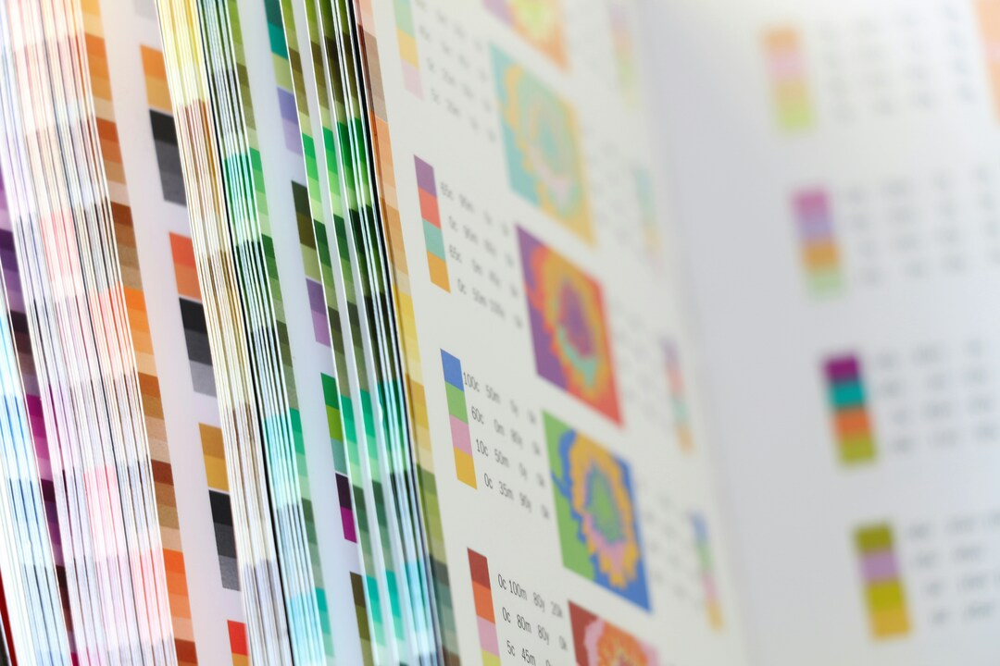

Une formation en Web pour concrétiser mon projet.
Après beaucoup de recherche personnelle, l’idée vient de créer une petite agence de graphistes indépendants grâce à la formation du DEUST WMI.
Quel projet professionnel viser avec le milieu du web ? Le milieu du web offre beaucoup de possibilités différentes, il faut réfléchir à quel marché viser, tout en restant créatif et atypique.
Le bilan de compétences pour trouver sa voie.
C’est pendant ma période en recherche d’emploi que j’ai pu réaliser un
En revenant sur mon parcours, j’ai réalisé que cet intérêt que j'avais eu pour l'ingénierie n'était jamais réellement parti. Peut-être pas dans le côté maths appliqués, mais la partie informatique, code, et systèmes était toujours aussi intrigante à mes yeux. Mes recherches se sont donc axées vers ce milieu, et c’est là que s’est ouvert la piste du développement web. Par un curieux hasard, je suis tombé sur les sites internet personnels les plus créatifs que j’avais jamais vu auparavant, et là m’est venue l’idée de faire exactement ça ; des sites, entièrement réfléchis, codés, pensés comme j’aurais pu penser toutes les étapes d’une illustration. Et si je savais coder, alors tellement de nouvelles portes créatives s’ouvriraient à moi !
Développer un projet professionnel en graphisme.
En parlant de cette nouvelle piste à mon entourage, personne n’a vraiment été surpris. Bon, j’étais déjà connu pour aider tout le monde à résoudre ses problèmes informatiques, donc tout s’explique. Un ami graphiste, Christian Corbinus, m’a alors proposé de travailler ensemble. En effet, sa spécialité étant le graphisme pour l’impression, il rencontre souvent des clients qui lui demandent aussi s’il accepterait de faire pour eux d’autres missions en web. Là est née l’idée de monter une agence de graphisme afin d’allier nos deux portefeuilles complémentaires et d’apprendre l’un de l’autre.
Depuis, on développe ensemble ce projet et on réfléchit à comment le mettre en œuvre. Ses clients sont souvent eux aussi dans le milieu de l’art, ce qui me fait réfléchir à proposer des sites de portfolio pour artistes. J’ai remarqué que souvent ils ne savent ni coder, ni ont la patience de gérer leurs sites, pourtant tous en ont besoin pour postuler à de nouveaux projets. Du coup, je pourrais faire un atout de mes connaissances du milieu. Je pense aussi aux musées, aux mairies, et à beaucoup d’associations et de groupes locaux qui pourraient être intéressés par des sites hyper créatifs et accessibles. J’en fais maintenant mon but ; je veux créer des sites un peu loufoques mais compréhensibles, professionnels mais typiques.
La formation en distanciel, une porte ouverte.
Reprendre ses études reste un défi, surtout pour les personnes qui ont besoin de continuer à travailler. J’étais aussi intimidé par le fait de refaire parti d’un milieu étudiant que j’avais quitté. Trouver cette formation en DEUST en Web et Métiers de l’Informatique est devenue une énorme porte ouverte pour moi. Je pense que le distanciel correspond très bien à mon profil qui aime l’autonomie et pouvoir s’organiser entre tous ses projets.
Hors cet aspect distanciel, je recherchais une formation qui pourrait me donner toutes les compétences de A à Z pour la création web, sans pour autant me fermer dans un seul de ses aspects. J’aime le côté généraliste d’apprendre à rédiger pour le web, mais aussi à manager un site et en prendre soin sur le long terme, à le créer soi-même et savoir en faire la promotion. Toutes ces compétences répondent vraiment à mon projet, et me permettront de continuer à me spécialiser plus tard si je le souhaite.
En cernant mieux mes besoins et mes intérêts, j’ai pu mieux comprendre les opportunités qui m’entouraient. C’est aussi grâce à l’aide des autres et leur accompagnement que j’ai pu avancer.